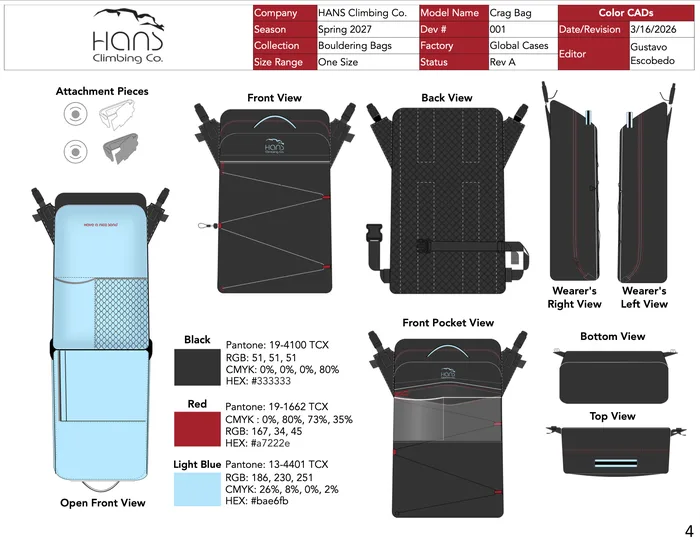

Bouldering Front Pack Tech Pack
Tech pack built for a novel outdoor bouldering bag that attaches with magnetic clips to Crash Pad straps, taken from insight to salesman sample.

Color CADs page from the tech pack. Tap to open full size.
Overview
Over the course of my master's program, my team designed and built a bouldering bag based on an insight from our consumer interviews and surveys: boulderers struggle to carry gear while carrying a Crash Pad on the hike to the rock. The bag uses a FidLock magnetic connection system to attach to Crash Pad straps, making the approach more comfortable and enjoyable for the climbers. As the team's factory contact, I worked directly with our manufacturer in China from the brand side. I learned how to communicate a product idea through a tech pack and how to improve the product across 3 rounds of samples, ending with a salesman sample.